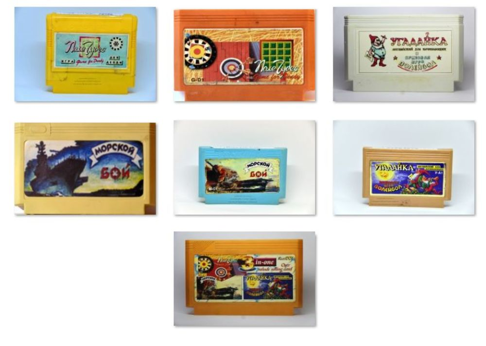

Разбор картриджа "Морской Бой" от А.Чудова
Дата написания статьи: 29 мая 2018.Ссылка на пост ВК (оригинал): https://vk.com/wall-87396586_2276
Адаптировано для музея: AlexSRMD
Здравствуйте уважаемые читатели, с вами Админ №2 и мы продолжаем работать для вас... Сегодняшний пост у нас будет про то, что не влезло в прошлую подборку, потому что является многоигровкой и видео состоит из трех частей.
Это картридж M-G1 Морской Бой. Да, это игра за авторством небезызвестного Александра Витальевича Чудова.
Да, это картридж A-B1 серии и феномен его возникновения мы уже с вами обсуждали пару постов раннее
https://vk.com/wall-87396586_2182 |https://superbrain1997-retro-museum.herokuapp.com/articles/7
Но сегодня мы обсудим непосредственно его внутреннее содержание. Это как я уже упомянул многоигровка - 3 в 1 если быть точнее, при этом сами пункты меню появляются только после начальной заставки, которая представляет из себя бой двух кораблей, графика не очень сильная, но для кустарной игры очень неплохо. А соответственно дальше у нас есть возможность выбрать пункт меню. Что у нас есть? Сам Морской Бой, некий Математический Бой и Калькулятор.
Разберем по порядку:
Морской Бой | https://www.youtube.com/watch?v=tUZSF5NpbtE (YouTube Video)
Непосредственно то, что и написано на обложке, интерпретация игры довольно ничем не примечательна, кроме выбора сложности пожалуй и некоторой сложности в расстановке кораблей. А так, все как и надо - стреляешь по клеточкам, выбивая корабли противника, ну и соответственно он твои. Интересно что эта игра не единственная версия Морского Боя, потому как у нас также существовала переведеная где-то в Санкт-Петербурге официальная версия Морского Боя - BattleShips, однако думаю что она была такой же нечастой как и русские переводы игр впринципе. Конечно лицензионная игра и самоделка от программиста-одиночки несравнимы, однако надо сказать что версия Александра Витальевича весьма неплоха, так что еще одна неплохая игра за его авторством у нас приехала.
Математический Бой | https://www.youtube.com/watch?v=Sdp6cd_c3rU (YouTube Video)
Вот это уже можно сказать почти оригинальная игра, потому как она на самом деле сделана почти с нуля, и представляет из себя по сути тренировку простейшей арифметики в игровом виде. То есть у нас есть небольшой простейший пример и путем стрельбы в НЛО с цифрой ответа можно пройти дальше или же нет. Казалось бы просто, но оригинально. Тут также есть возможность выбора сложности, что влияет на скорость падения и соответственно тренирует реакцию и скорость мышления, что вообще говоря тоже не лишено смысла. Перед тем как пойти дальше, я скажу что при наборе определенного кол-ва очков игра предложит вам бонус в виде игры в Волейбол, который также был в игре Угадайка. И таким образом можно сказать что у нас внутри не 3, а даже 4 в 1.
Калькулятор | https://www.youtube.com/watch?v=HaAid9IjHCs (YouTube Video)
Слово говорит само за себя, по большому счету оригинальная интерпретация счетного механизма, в 90ые могла быть полезна, но сейчас думаю не очень, да и к тому же мне кажется что та версия что была на разного рода обучающих картриджах была гораздо удобнее и практичнее.
Ссылки для просмотра геймплей-видео непосредственно прикреплены выше к каждому пункту картриджа, который здесь есть.
В итоге можно сказать что у нас внутри неплохая сборка вышла, она может быть и не является шедевром, но как самодельные игры от одного человека это выглядит вполне интересно и заслуживает внимания.
Ссылка на картридж в нашем музее: https://superbrain1997-retro-museum.herokuapp.com/cartridges/377
Ну а на сегодня я думаю мы закончили, новую подборку видео ждите очень скоро, я уже работаю над ней, а чтобы не пропустить уж точно, можете подписаться на канал, ну и также не забывайте ставить лоесы, подписываться на наш паблик, и как я уже что раз говорил, наилучшая помощь нам и нашему с вами общему делу - распространяйте наши видео, посты и пр.
На этом прощаюсь с вами, но ненадолго....
Ваш второй админ - Нейрбов А.А.
Галерея
